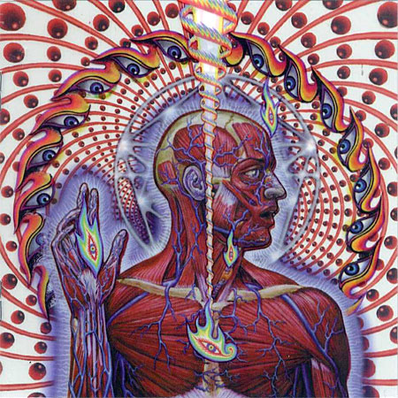

TOOL
Música más allá del entendimiento humano
Álbumes de TOOL

|
|
|  |

|
¿Qué es/quiénes son?
Tool es una banda estadounidense de metal progresivo surgida en 1990 en Los Ángeles, California. Ha vendido más de trece millones de álbumes solo en Estados Unidos y ha ganado cuatro premios Grammy hasta la fecha; ha encabezado giras y prestigiosos festivales y ha producido exitosos álbumes que alcanzaron grandes niveles de ventas gracias a su estatus de culto en el mundo de la música.1 Está formada por el baterista Danny Carey , el guitarrista Adam Jones, el vocalista Maynard James Keenan y el bajista Justin Chancellor, que sustituyó a Paul D'Amour en 1995.
¿Cuál es su discografía?
Tool suele producir pocos álbumes, demos, etc. en un tiempo muy extendido. De hecho, hubo unos que se tardaron 13 años en salir al público. Ordenados del primero al último, sus nombres son 72826, Opiate, Undertow, AEnima, Salival, Lateralus, 10.000 days y Fear Inoculum.
¿Que es lo que hace a su estilo tan único?
Tool ha conseguido las alabanzas de la crítica por su sonido envolvente y complejo. Un componente básico del catálogo de Tool es el uso de compases poco comunes. Más allá de este aspecto del estilo de Tool, cada miembro experimenta en su propio campo musical. El estilo de Chancellor está cargado como un "tono espeso de alcance medio, semejante a la técnica de guitarra y con versatilidad elástica". Siguiendo con la sección rítmica de la banda, el batería Danny Carey utiliza polirritmos, un estilo semejante al de la tabla, y la incorporación de baterías electrónicas para facilitar el uso de samples. La habilidad vocal de Keenan ha sido reconocida subjetivamente por varias fuentes. Según la revista Guitar Player, Adam Jones no depende de ninguna técnica guitarrística, sino que combina varias.
La banda pone un énfasis especial en el sonido de sus canciones e intenta reducir el impacto que las letras pueden tener en la percepción de la música al no incluirlas en sus discos. A menudo se presta bastante atención a los arreglos líricos, como en "Lateralus". El número de sílabas por verso en la letra de esta canción se corresponde con la secuencia de Fibonacci, mientras que en "Jambi" se usa el pie métrico yambo. Las letras de Ænima y Lateralus se centran en la espiritualidad y la filosofía; los temas empleados van desde la religión organizada en "Opiate", la evolución y la psicología de Carl Jung en "Forty-Six & 2" y la trascendencia en "Lateralus". En 10,000 Days, Keenan quería explorar temas más personales para él: el nombre del álbum se refiere a los veintisiete años (aproximadamente 10.000 días) durante los que su madre sufrió las consecuencias de un accidente cerebrovascular hasta su muerte en 2003.¿Qué temas tratan y cómo?
Uno de los factores que definen a esta banda es el uso interminable de símbolos místicos que se encuentran en sus letras, la música, los videos, las imágenes y demás. Si damos un vistazo al arte visual de Tool, lo primero que se distingue es que hay cierta reminiscencia del ocultismo y una obsesión por la geometría. Si nos fijamos en su música, también podemos apreciar ciertas complejidades, sobre todo en los compases y ritmos. Lo que da pie a toda la temática de las letras, entre las cuales existen algunas que son una especie de burla o sarcasmo. Otras canciones, como “Lateralus”, hablan sobre situaciones abstractas relacionadas a ciertos temas de lo oculto. TOOL no hace simples canciones comerciales, cada una de sus canciones está relacionada con las anteriores, y hablan de las necesidades, dolores, pasiones, sentimientos, etc del ser humano, pero, sobretodo, como ello nos puede llevar a trascender, y a entender a otras personas.
Índice
- ¿Qué es/quiénes son?
- ¿Cuál es su discografía?
- ¿Que es lo que hace a su estilo tan único?
- ¿Qué temas tratan y cómo?
¡Síguelos en sus redes sociales! |


|